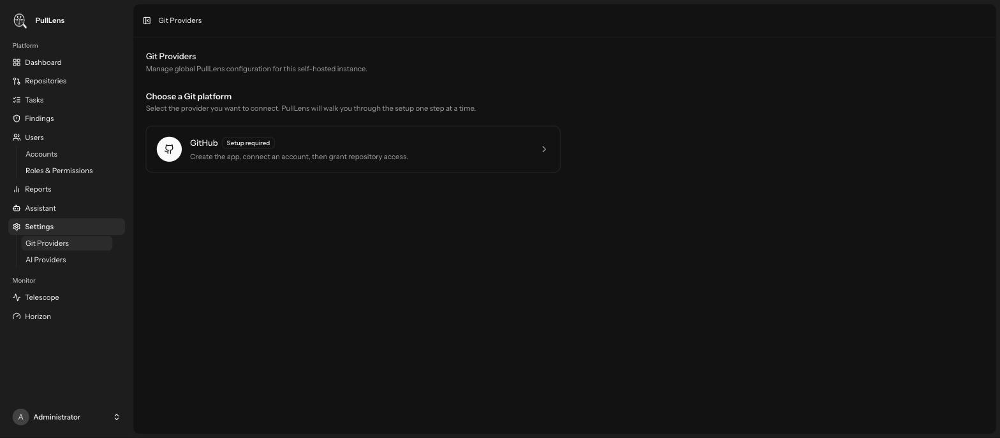
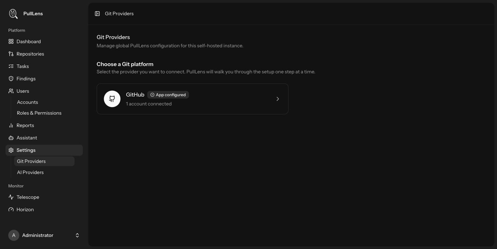

Connecting GitHub
PullLens talks to GitHub through a GitHub App that belongs to you. It is created once, from inside PullLens, and never leaves your control.
Why a GitHub App
A GitHub App is scoped to the repositories you choose, posts as its own bot identity rather than as a person, and can be revoked in one click. It is not tied to any employee's account, so nothing breaks when someone leaves.
Start the setup
Go to Settings → Git Providers. Before anything is connected, GitHub is listed as Setup required.

- Open the GitHub card Click through to start the guided setup.
- Create the app on GitHub PullLens builds a GitHub App manifest - the name, permissions, webhook URL and secret - and hands it to GitHub. You review it on GitHub's own screen and confirm. You are choosing whether to create the app; PullLens is only filling the form in for you.
Personal or organisation?
Create the app under the organisation that owns the repositories. A personal app cannot be installed on an organisation you do not administer.
- GitHub returns to PullLens The App ID, client credentials, private key and webhook secret come back automatically and are encrypted before they are stored. You never copy or paste them.
- Install the app on your repositories GitHub asks which repositories the app may access - all of them, or a chosen list. This is the boundary: PullLens can only ever see what you grant here.
- Connect the account Back in PullLens, the account appears as connected.

What the app is allowed to do
| Permission | Why it is needed |
|---|---|
| Pull requests - read & write | Read the diff; post the review, inline comments and labels. |
| Contents - read | Read changed files, and the optional PULLENS.md calibration file. |
| Metadata - read | Basic repository information. Mandatory for every GitHub App. |
| Checks - write | Publish the review as a check run so CI can gate on it. |
| Issues - read & write | Post and reply to pull request conversation comments. |
Webhooks
GitHub notifies PullLens when a pull request is opened, updated, merged or commented on. Two things are worth knowing:
- Your instance must be reachable from GitHub. If reviews never start, this is almost always why. See Troubleshooting.
- Every delivery is signature-verified. A webhook without a valid HMAC signature is rejected with 403 - including when no secret is configured. There is no mode where unsigned deliveries are trusted in production.
Disconnecting
Removing the connected account stops PullLens using it. Deleting the provider app removes the credentials from PullLens and uninstalls it from every account it was installed on. Your repositories and their history stay untouched on GitHub.